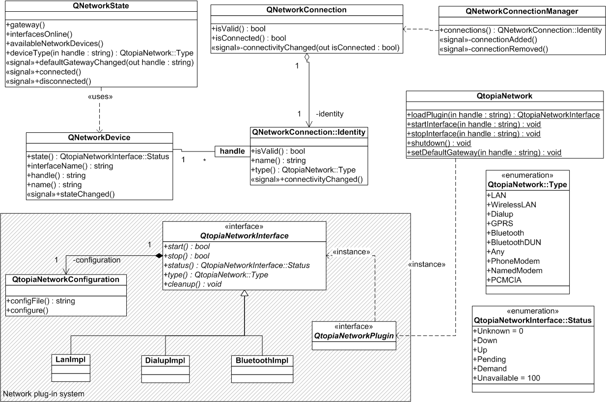
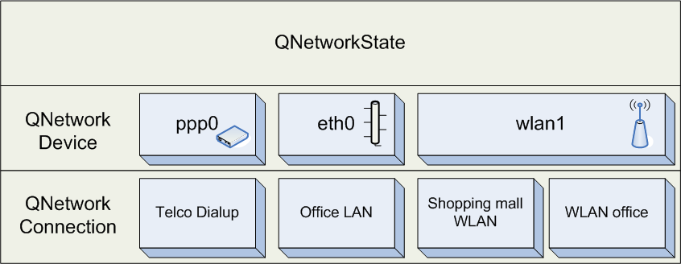

|
Home · All Namespaces · All Classes · Grouped Classes · Modules · Functions | |
The QNetworkDevice class provides information about the connectivity state of a network device. More...
#include <QNetworkDevice>
Inherits QObject.
The QNetworkDevice class provides information about the connectivity state of a network device.
Network devices are always associated with a configuration file which serves as an identifier/handle for a particular device. The configuration file is device specific and is saved in $HOME/Applications/Network/config/. The user can start start/stop/configure network devices via the Internet application. Network related application can start and stop the device via QtopiaNetwork::startInterface() and QtopiaNetwork::stopInterface() respectively. If the Qt Extended device has more than one device online at a time the default gateway can be set via QtopiaNetwork::setDefaultGateway().
The following UML class diagram displays the general interaction of the Qt Extended network API.

Qt Extended keeps track of network devices with the help of a session manager. If an application starts a device the session manager records the identity of the application and will close the device if the application doesn't stop the device before it quits. If several applications requested the same device the device is closed when the last remaining application closes the device. Hence every application should call QtopiaNetwork::startInterface() no matter whether the device is active already as this call creates a new session for this application. Note that a device which has been configured to use an internal timeout (e.g. timeouts of dial-up connections) may still stop when the timeout is triggered.
Any network related application may stop a particular interface which has been started by another application. This may be necessary in use cases such as when the phone receives a notification about a pending MMS. If the dial-up connection is already running but the APN is not the required one for MMS download the mail application may stop the dial-up connection and start another dial-up interface.
Since a QNetworkDevice is directly related to hardware it does not support use cases whereby e.g. an application wants to know to what WLAN the device is connected to. In order to obtain such information it is required to use QNetworkConnection which allows network identification on a much finer level of granularity.

See also QtopiaNetwork, QNetworkState, QNetworkConnection, and QtopiaNetworkInterface.
Constructs a QNetworkDevice object for the network device which is defined by handle. parent is the standard Qt parent object .
Deconstructs the object.
Returns the associated QNetworkInterface.
Returns the last error that occured. This is useful to find out what went wrong when receiving a stateChanged() signal with the error argument set to true.
Note: There could be various reasons why a device may report QtopiaNetworkInterface::NotConnected. A detailed description for such an error can be obtained by using errorString().
Returns a human-readable description of the last error that occurred. This is useful for presenting an error message to the user.
Returns the interface handle which is the full path of the associated configuration file.
Returns the name of the associated *nix network interface, e.g. eth0 or ppp2. The name should not be used to identify the network interface as it can change during the life time of the device. The returned name is empty if the interface hasn't been initialized yet or is not available.
See also state().
Returns the human-readable name of the device (e.g. Vodafone GPRS). The name can be set by the user when creating and/or configuring the device.
This function returns the connectivity state of this device.
This signal is emitted when the state of this device changes. newState is the new state. If error is true an error has occurred during the last transition.
See also errorString() and state().
| Copyright © 2009 Trolltech | Trademarks | Qt Extended 4.4.3 |